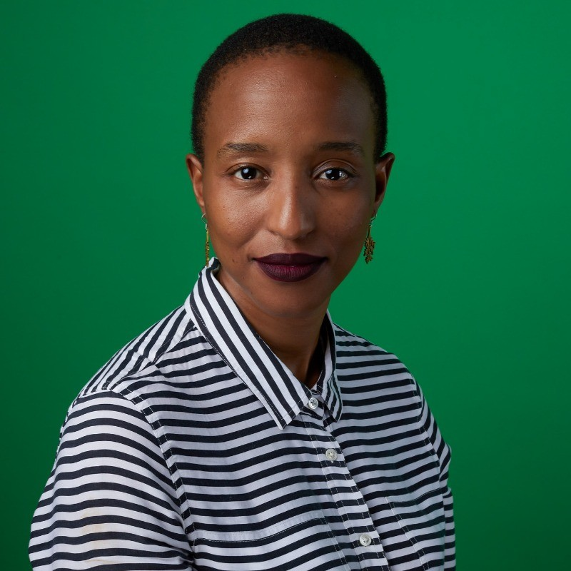
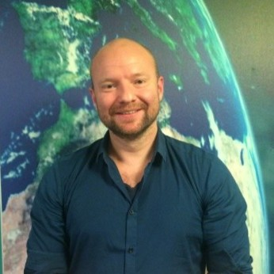
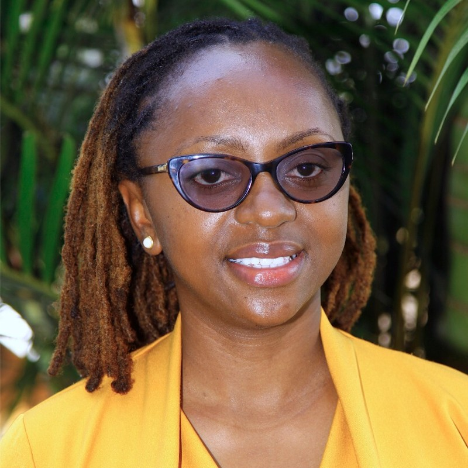
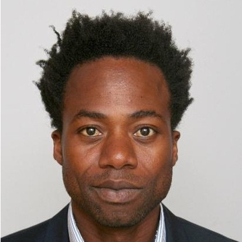
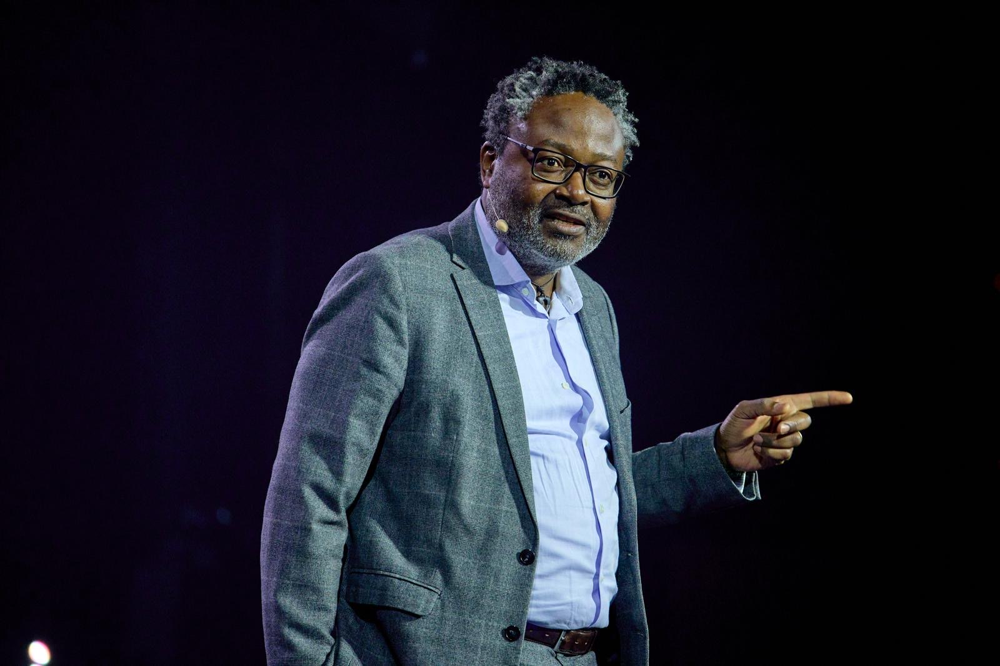
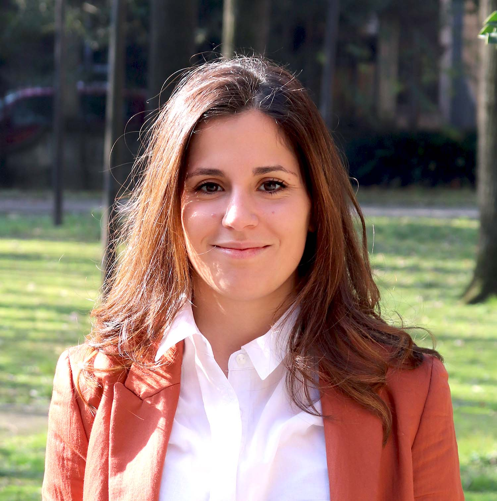

Who our experts are
Experts affiliated with Meridian17 share a conviction: that the Africa-Europe partnership matters, that business is central to making it work, and that rigorous, independent research is essential to understanding what holds it back and what can move it forward.
Their work - whether in academia, business, policy, or the broader public debate - is conducted with full academic freedom and independence. Meridian17 is not affiliated with any political party or governmental body, and enters into partnerships only where they support the goals and objectives of the organisation. Our experts reflect that same principle.

Dr Kelly Alexander
President, Meridian17 · GIBS Business School
A social scientist who analyses geopolitical shifts and integrates sustainability into economic development. She lectures on Strategy & Sustainability at GIBS Business School and holds a Master's in Development Sociology from Wits University and a PhD in Management & Organisation Studies from Tilburg University.

Dr Zuziwe Khuzwayo
Gender Practitioner & Researcher
A global feminist gender practitioner with extensive experience in civil society, research, and philanthropy. A trained sociologist, her work centres on the intersections of gender, race, class, and sexuality, with a focus on development challenges in the Global South.

Dr Egbert van der Zee
Tourism Geography Researcher
Studies tourism geography, focusing on how tourism interacts with cities - including the spatial development of Airbnb in South Africa and the influence of reviews on traveller behaviour. He employs GIS, social network, and sentiment analyses to advance sustainable, inclusive tourism.

Jane Waiyaki
WWF Global Finance Practice
A sustainable finance expert mobilising capital for conservation, climate, and nature solutions at WWF's Global Finance Practice. A 2021 UN Global Compact SDG Pioneer and 2022 One Young World Ambassador, she mentors youth and SMEs on sustainable finance.

Agnieszka Skorupinska
EU Sustainable Policy Specialist
An expert in EU sustainable policies, specialising in decarbonisation, circular economy, biodiversity, sustainable value chains, and sustainable AI. Passionate about harnessing technology to improve lives in Europe and Africa, she also dedicates her time to social inclusion and nature conservation.

Stanley Anyetei
TIAS Business School · Signify Foundation
Over 15 years of investment and sustainable banking experience across Africa, Europe, and Asia. Previously managed impact portfolios at Triodos and PYMWYMIC, sits on the board of Signify Foundation, lectures on CSR at TIAS Business School, and mentors SMEs in financial sustainability.

Dakin Parker
Chartered Accountant (SAICA)
A Chartered Accountant with 25 years of experience across three continents. He has led initiatives to bring new ideas to post-revenue organisations, expand organisational capacity, and develop people's skills. Holding two Master's degrees, he thrives on challenges once deemed impossible.

Marie Badiane
Alexander & Partner
A lawyer and project finance specialist bridging European capital with African energy and infrastructure projects. Creator of the RUBICUB method, advancing Africa-led development through reverse-engineered finance. A trilingual deal enabler who curates high-level panels and fosters German-French-African business ties.

Dr Yvette Hlophe
University of Pretoria
A Senior Lecturer in Physiology at the University of Pretoria, specialising in innovative cancer treatments. Her research drives impactful collaborations across Africa and has earned her several accolades, reflecting her commitment to advancing both cancer research and health education.

Paul Mbikayi
Dutch Government · Ambassador of Tolerance
The Netherlands' first Ambassador of Tolerance, bridging African and European cultures through his work in the Dutch government. This Dutch-Congolese civil servant champions dialogue and inclusion across multiple ministries, focusing on DEI and tolerance initiatives.

Tracey Shiundu
FunKe Science · Edtech Pioneer
Co-Founder and CEO of FunKe Science, an edtech pioneer using interactive kits and AR/VR to transform science learning for over 20,000 children across Africa. A Mastercard Foundation EdTech Fellow and Top 40 Under 40 honoree, she is a passionate advocate for girls in STEM.

Dr Alessia Argiolas
TUM SEED Center
A postdoctoral researcher at TUM's Chair of Corporate Sustainability and coordinator of the TUM SEED Center. Her Joachim Herz-awarded research examines how off-grid energy ventures drive social impact in Africa and India. She holds a PhD in Management and Innovation from the Catholic University of Milan.
Interested in joining our expert network?
We are actively growing our network of affiliated researchers, practitioners, and business leaders. If your work aligns with our focus on the business of Africa-Europe partnership, we would like to hear from you.
Get in touch →Full academic and professional freedom - your work remains your own
Access to a growing network of researchers, policymakers, and business leaders across both continents
Opportunities to contribute to research, podcast episodes, and events
A shared commitment to practical outcomes, not just publications